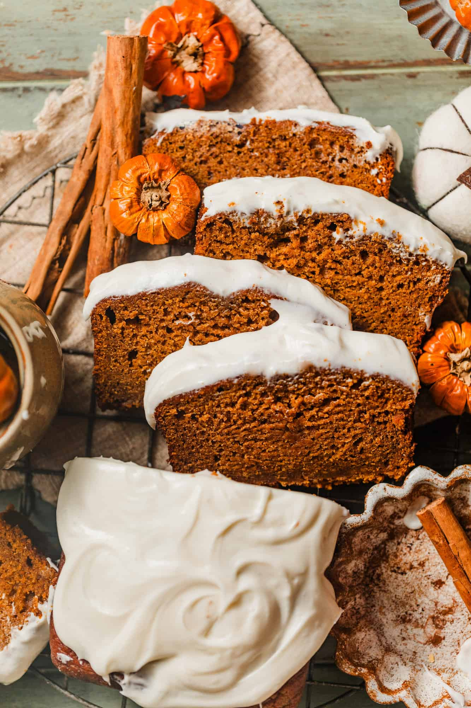
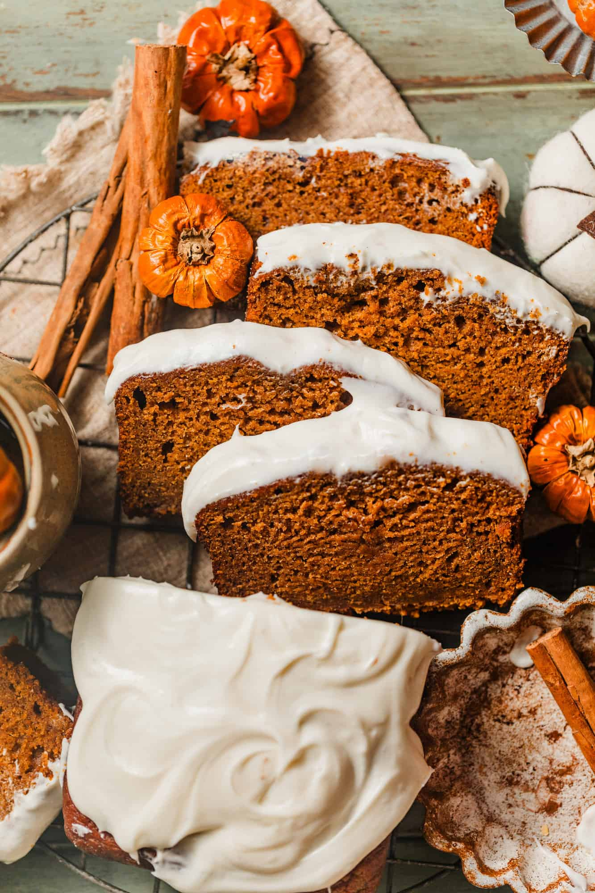
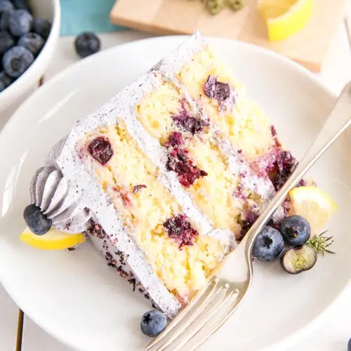
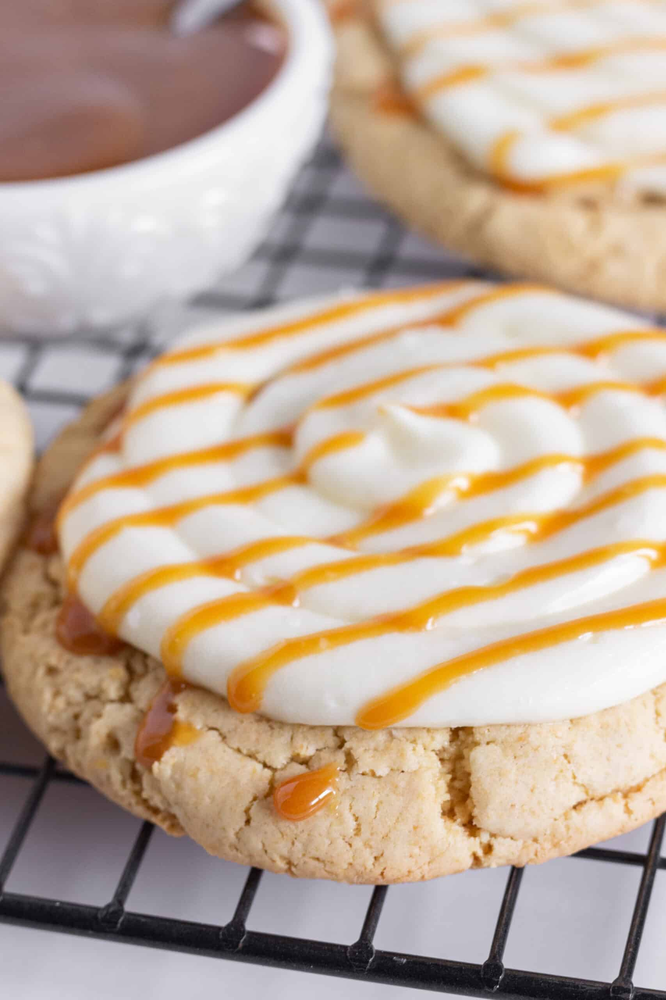
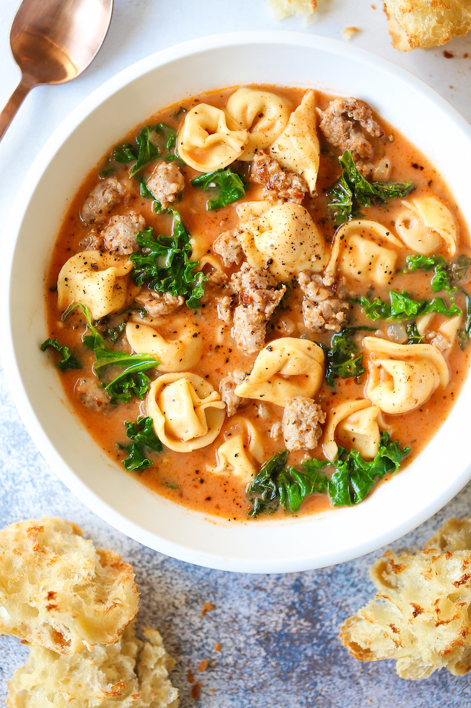

Pumpkin Bread
Pumpkin bread is a type of moist quick bread made with pumpkin. The pumpkin can be cooked and softened before being used or simply baked with the bread; using canned pumpkin renders it a simpler dish to prepare.
This website will show all of my favorite recipes for each category of cooking and baking. Below, there are 4 trending recipes that are popular right now.
Pumpkin Bread
Pumpkin bread is a type of moist quick bread made with pumpkin. The pumpkin can be cooked and softened before being used or simply baked with the bread; using canned pumpkin renders it a simpler dish to prepare.
Lemon Blueberry Cake
Sunshine-sweet lemon blueberry layer cake decorated with juicy berries and topped with lush cream cheese frosting. One of the most popular cake recipes on this website!
Salted Carmel Cookies
Soft chewy caramel cookies with sea salt and drizzled with salted caramel. This is for all of my salted caramel lovers.
Tortellini Soup
Slow Cooker Creamy Tortellini Soup is pure comfort food, loaded with vegetables. It's the perfect cozy meal for fall and only takes 30 minutes to make.